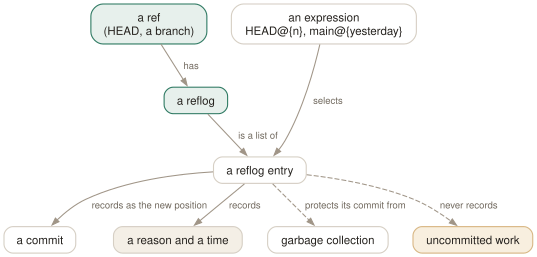

Day 11
The reflog
Every place your branches have been, kept locally for months — the reason rewriting is safe.
By the end of today you can
- read
git reflogand name any earlier position ofHEADor a branch with@{n}or@{date} - recover from a bad
reset --hard, a botched rebase, a deleted branch and a commit left behind on a detached HEAD - say precisely what the reflog cannot save you from, and how long it keeps what it can
git remembers every place a name has pointed
Commits are never edited, only abandoned, and a ref is a small file that gets rewritten. So the one thing a rewrite could lose is the old value of that file. git keeps it: every time HEAD or a branch moves, a line is appended to its reflog — old hash, new hash, who, when, and why. That log is the safety net under Days 8 to 10.
$ git reflog
fad8de7 HEAD@{0}: reset: moving to HEAD~2
f28019d HEAD@{1}: checkout: moving from spike to main
2123547 HEAD@{2}: commit: spike1
f28019d HEAD@{3}: checkout: moving from main to spike
f28019d HEAD@{4}: commit: three
23631ff HEAD@{5}: commit: two
fad8de7 HEAD@{6}: commit (initial): one
Read it bottom to top as a diary: three commits, a detour to spike with one commit there, back to main, and a reset --hard that threw away two commits. Nothing has actually been thrown away. f28019d (“three”) is right there, and git reset --hard f28019d restores the branch.

Every ref has its own log
The unqualified git reflog shows HEAD's log, which records everything including checkouts. Each branch has a log of its own, recording only that branch's moves:
$ git reflog show main
fad8de7 main@{0}: reset: moving to HEAD~2
f28019d main@{1}: commit: three
23631ff main@{2}: commit: two
fad8de7 main@{3}: commit (initial): one
Those labels are revision expressions (Day 7), usable anywhere. HEAD@{1} is where HEAD was one move ago; main@{1} where main was; @{1} is the current branch's previous value. Entries can also be selected by time, since each has a timestamp:
$ git reflog --date=iso main | head -3
f28019d main@{2026-09-25 09:00:00 +0200}: reset: moving to HEAD@{1}
fad8de7 main@{2026-09-25 08:00:00 +0200}: reset: moving to HEAD~2
f28019d main@{2026-09-25 03:00:00 +0200}: commit: three
$ git log -1 --format=%s 'main@{2026-09-25 02:30}'
two
Four recoveries
- after reset, merge or rebase
- These commands also write the old position to
ORIG_HEAD, so the immediate undo isgit reset --hard ORIG_HEAD. Later, find the line before the operation ingit reflog(a rebase leaves a “rebase (start)” and “rebase (finish)” pair) and reset to the hash above it. - after deleting a branch
- The branch's own reflog is deleted with it, but
HEAD's is not.git reflog | grep <branch>, thengit branch <branch> <hash>. - after committing on a detached HEAD
- No branch was moving, but
HEADwas, so the commits are inHEAD's reflog. git also tells you as you leave: - after dropping a stash
git stash dropprints the hash;git stash apply <hash>works on it. Without the hash,git fsck --unreachablelists it among the unreachable commits (Day 13 explains why a stash is a commit).
$ git switch main
Warning: you are leaving 1 commit behind, not connected to
any of your branches:
1bf30f0 detached-work
If you want to keep it by creating a new branch, this may be a good time
to do so with:
git branch <new-branch-name> 1bf30f0
What the reflog cannot save
The reflog records ref movements, and refs only ever point at commits. So it knows nothing about:
- Unstaged edits overwritten by
reset --hard,restoreorcheckout -- <file>. They were never objects. - Untracked files deleted by
git clean(Day 8). Same reason. - Anything older than the expiry.
gc.reflogExpiredefaults to 90 days, andgc.reflogExpireUnreachable— for entries whose commit is no longer on the ref's current history, which is exactly what you are usually trying to recover — to 30 days. Entries are pruned bygit gc, which git runs for you from time to time (Day 20). - Other people's refs, and the server. Reflogs are never transferred, and bare repositories do not keep them:
core.logAllRefUpdatesis true by default only where there is a working tree.
The first two are the real hazard, and the fix is habit, not configuration: commit early, even as wip, because anything committed is covered and can be tidied later with Day 10's tools. Staged content is half-covered — git add wrote a blob, so git fsck --lost-found can often dig it out, without its file name.
Today's habit
When something goes wrong, stop and run git reflog before typing anything that might move a ref. Find the line from before the mistake, copy its hash, check it with git log -1 <hash> or git diff <hash>, and only then reset or branch to it.
That finishes the rewriting trilogy. Tomorrow: configuration itself — where git's settings live, which one wins, and the aliases that are worth having.
New vocabulary
Commands
| Command | Does |
|---|---|
git reflog | List where HEAD has pointed, newest first, as HEAD@{n} entries. Short for git reflog show HEAD. |
git reflog show <branch> | List where one branch has pointed. Its entries are <branch>@{n}. |
git reflog --date=iso | Show each entry's time instead of its index: main@{2026-09-25 09:00:00 +0200}. |
git log -g | Walk a reflog with the full git log formatting options. |
git reset --hard ORIG_HEAD | Undo the last reset, merge or rebase: go back to where it started. |
git branch <name> <commit> | Give a recovered commit a name again, so it is safe for good. |
git fsck --unreachable | List objects nothing refers to — not even a reflog. Where dropped stashes are found. |
Options
| Option | Does |
|---|---|
gc.reflogExpire | Age after which reflog entries are pruned. Default 90 days. |
gc.reflogExpireUnreachable | Same, for entries no longer reachable from the ref's tip. Default 30 days. |
core.logAllRefUpdates | Whether reflogs are kept. True by default with a working tree, false in a bare repository. |
Drillsdo these in a real terminal, today
Self-check
Answer out loud first, then unfold.
You recover from a bad reset with git reset --hard HEAD@{2}, having read the index off the reflog a minute ago. You land on the wrong commit. What changed?
The reflog itself. Every move of HEAD adds an entry at @{0} and pushes everything else down by one, so indices are only valid until the next command — and even a failed recovery attempt counts as a move. Copy the hash from the reflog line instead; a hash means the same thing forever. The reset you just did is itself in the reflog, so you can still get to where you meant.
You deleted a branch with git branch -D spike. git reflog show spike says the name is unknown. Is the work gone?
Not yet. Deleting a branch deletes its own reflog along with it, so that command has nothing to show. But you made those commits with HEAD on spike, and HEAD's reflog records every commit and checkout regardless of branch. git reflog | grep spike finds the “commit: …” lines and the “checkout: moving from spike” line, and git branch spike <hash> restores it. git branch -D also printed the tip hash when it deleted the branch.
A colleague force-pushed over main on the shared server. You ssh in to recover it from the server's reflog, and there isn't one. Why?
Server repositories are bare, and core.logAllRefUpdates defaults to false in a bare repository. And reflogs are never transferred: they are not pushed, fetched or cloned (a fresh clone's reflog has one entry, “clone: from …”). The copy that has the old main is in someone's clone — your origin/main reflog, if you fetched before the force-push, has it as origin/main@{1}.
You dropped a stash an hour ago and now need it. git reflog does not show it. Where is it?
A stash is a commit (Day 13) recorded only in the reflog of refs/stash, and git stash drop deletes that reflog entry. So the commit is unreachable from everything, reflogs included, and git fsck --unreachable lists it among the unreachable commits. Easier still: drop printed its hash (“Dropped refs/stash@{0} (615ea5d…)”), and git stash apply 615ea5d brings it back while the object survives — normally two weeks, until gc prunes it (Day 20).
Cheat sheet
git reflog # where HEAD has been (newest first)
git reflog show BRANCH # where BRANCH has been
git reflog --date=iso # times instead of indices
HEAD@{3} main@{1} @{1} # earlier positions (indices shift!)
'main@{2 days ago}' # your local main, by time
git reset --hard ORIG_HEAD # undo the last reset/merge/rebase
git branch rescue HASH # make a recovered commit permanent
git fsck --unreachable # dropped stashes and orphans
# not covered: unstaged edits, untracked files, other clones
# expiry: 90 days reachable, 30 days unreachable (gc)
Everything through Day 11
Commands
| Command | Does |
|---|---|
git init -b main | Create an empty repository whose first branch is main. |
git hash-object <file> | Print the object name the file's contents would get. Writes nothing without -w. |
git cat-file -t <object> | Print an object's type: blob, tree, commit or tag. |
git cat-file -p <object> | Pretty-print an object's contents. The one command that shows what git really stores. |
git cat-file -s <object> | Print an object's size in bytes. |
git ls-tree -r <tree-ish> | List every blob in a tree, recursively, with mode and hash. |
git rev-parse HEAD | Turn a name into the full hash it currently means. |
git count-objects -v | Count loose and packed objects and the disk they use. |
git status -s | Show each changed path with two columns: index vs HEAD, then working tree vs index. |
git add <path> | Copy the file's current contents into the index. Writes the blob immediately. |
git add -p | Walk through each hunk and choose which ones go into the index. |
git diff | Show what differs between the index and the working tree — what add would stage. |
git diff --staged | Show what differs between HEAD and the index — what commit would record. |
git restore <path> | Overwrite the working-tree file with the index version. Discards unstaged edits. |
git restore --staged <path> | Reset the index entry to HEAD's version. The working tree is untouched. |
git commit [-a] | Turn the index into a tree, wrap it in a commit, move the branch to it. -a first stages every modified tracked file (never untracked ones). |
git rm --cached <path> | Remove a path from the index only; the file stays on disk, now untracked. |
git branch | List local branches; * marks the one HEAD names. |
git branch -v | List branches with the commit each points at and its subject line. |
git branch <name> | Create a branch at HEAD without switching to it. |
git switch <branch> | Point HEAD at a branch and update the index and working tree to its commit. |
git switch -c <name> | Create a branch at HEAD and switch to it in one step. |
git switch - | Switch back to the branch you were on before. |
git switch --detach <commit> | Point HEAD directly at a commit, with no branch in between. |
git branch -d <name> | Delete a branch, refusing unless it is merged into its upstream (or into HEAD, if it has none). |
git branch -D <name> | Delete a branch unconditionally. |
git branch -m <old> <new> | Rename a branch. |
git merge <branch> | Bring the branch's history into the current one: fast-forward if possible, else a merge commit. |
git merge --ff-only <branch> | Merge only if it is a fast-forward; otherwise refuse and change nothing. |
git merge --no-ff <branch> | Always create a merge commit, even when a fast-forward was possible. |
git merge --abort | Give up a conflicted merge and restore the state before it started. |
git merge-base A B | Print the best common ancestor of two commits — the version a merge compares against. |
git ls-files -u | List the unmerged index entries: one line per stage per conflicted path. |
git show :1:<path> | Show the base version of a conflicted file. :2: is yours, :3: theirs. |
git checkout --conflict=merge <path> | Recreate the conflict markers in a file you mangled; =zdiff3 works too. |
git clone <url> | Copy a repository: all objects, its branches as origin/*, and one local branch checked out. |
git remote -v | List remotes with their fetch and push URLs. |
git remote add <name> <url> | Register another repository under a short name. |
git fetch | Download new objects and move the remote-tracking refs. Never touches your branches or files. |
git pull | Fetch, then integrate the upstream into the current branch. |
git push | Send the current branch's commits and move the branch of the same name on the remote. |
git push -u origin <branch> | Push and record origin/<branch> as this branch's upstream. |
git push origin --delete <branch> | Delete a branch on the remote. |
git branch -vv | List branches with their upstream and ahead/behind counts. |
git log --oneline --graph --all | Draw every branch's history, one line per commit. |
git log -p | Show each commit's diff against its parent. |
git log --stat | Show which files each commit touched, and how much. |
git log --author=<re> --since=<date> | Keep only commits whose author matches, from a date onwards. |
git log -- <path> | Keep only commits that changed the path. The -- separates paths from revisions. |
git log --follow -- <file> | Follow one file's history back through renames. |
git log -S<string> | Pickaxe: keep commits that change how many times the string occurs. |
git log -G<regex> | Keep commits whose diff adds or removes a line matching the regex. |
git log -L :<func>:<file> | Show the history of one function (or -L 10,20:file for a line range). |
git show <commit> | Show one commit: message and diff. |
git blame -w -C <file> | Annotate each line with its last commit, ignoring whitespace and seeing moves between files. |
git rev-parse --verify <rev> | Resolve an expression to one object name, or fail. The checker for everything today. |
git rev-parse --abbrev-ref <rev> | Print the short ref name an expression means: @{u} becomes origin/main. |
git rev-parse --symbolic-full-name <rev> | Print the full ref name, e.g. refs/remotes/origin/main. |
git log A..B | List commits reachable from B but not from A: what B has that A lacks. |
git log --left-right A...B | List commits on either side but not both, marked < or >. |
git diff A...B | Diff from the merge base of A and B to B: what B changed since they split. |
git show <rev>:<path> | Print a file as it was in any commit, without checking anything out. |
git show :<path> | Print the version of a file currently staged in the index. |
git commit --amend | Replace the last commit with a new one built from the current index. Opens the editor. |
git commit --amend --no-edit | Amend, keeping the message: for the file you forgot to add. |
git reset --soft <rev> | Move the branch to rev. Index and working tree untouched. |
git reset <rev> | Move the branch and reset the index to it (--mixed, the default). Working tree untouched. |
git reset --hard <rev> | Move the branch, and overwrite index and working tree to match. Destroys uncommitted work. |
git reset -- <path> | Copy path from HEAD into the index: unstage. The branch does not move. |
git restore --source=<rev> <path> | Overwrite a working-tree file with its version from any commit. |
git revert <commit> | Make a new commit that undoes commit. The safe undo for published history. |
git clean -n | List the untracked files -f would delete. Add -d for directories, -x for ignored files. |
git clean -fd | Delete untracked files and directories. Ignored files survive unless -x. |
git rebase <upstream> | Replay the commits in <upstream>..HEAD on top of upstream. With no argument, uses @{u}. |
git rebase --onto <new> <old> [<branch>] | Replay <old>..<branch> on top of new: transplant part of a branch. |
git rebase --continue | After resolving and git adding a conflict, commit it and go on. |
git rebase --skip | Drop the commit that stopped, and go on. |
git rebase --abort | Put the branch back exactly where it was before the rebase started. |
git push --force-with-lease | Overwrite the remote branch only if it is still where your remote-tracking branch says. |
git push --force-if-includes | With the lease: also refuse if the remote tip was fetched but never integrated locally. |
git rebase -i <base> | Open the todo list for <base>..HEAD in your editor, then run it. |
git rebase --edit-todo | Re-open the remaining todo list while a rebase is stopped. |
git commit --fixup=<commit> | Commit the staged change as fixup! <subject>, to be melted into commit later. |
git commit --fixup=amend:<commit> | Like --fixup, but the squash also replaces the target's message. |
git rebase -i --autosquash <base> | Move every fixup!/squash!/amend! commit under its target and mark it. |
git rebase -x '<cmd>' <base> | Run cmd after every replayed commit; stop at the first failure. |
git range-diff <base> <old> <new> | Pair up the commits of two versions of a branch and show how each changed. |
git reflog | List where HEAD has pointed, newest first, as HEAD@{n} entries. Short for git reflog show HEAD. |
git reflog show <branch> | List where one branch has pointed. Its entries are <branch>@{n}. |
git reflog --date=iso | Show each entry's time instead of its index: main@{2026-09-25 09:00:00 +0200}. |
git log -g | Walk a reflog with the full git log formatting options. |
git reset --hard ORIG_HEAD | Undo the last reset, merge or rebase: go back to where it started. |
git branch <name> <commit> | Give a recovered commit a name again, so it is safe for good. |
git fsck --unreachable | List objects nothing refers to — not even a reflog. Where dropped stashes are found. |
Options
| Option | Does |
|---|---|
user.name / user.email | Set the identity written into every commit's author and committer lines. |
init.defaultBranch | Name the first branch of every new repository. |
commit.verbose | Show the staged diff below the message in the commit editor. |
branch.sort | Set the default order of git branch; -committerdate puts recent work first. |
merge.conflictStyle | Choose the marker style: merge (default), diff3 or zdiff3. |
pull.ff | only: let git pull fast-forward and refuse anything else. |
push.autoSetupRemote | Make a plain git push of a new branch create it upstream and track it. |
fetch.prune | Delete remote-tracking refs whose branch was deleted on the remote, on every fetch. |
diff.colorMoved / diff.colorMovedWS | Colour moved blocks differently from added and removed ones; allow-indentation-change still recognises a re-indented move. |
push.useForceIfIncludes | Make every --force-with-lease behave as if --force-if-includes were given. |
rebase.autoSquash | Make rebase -i autosquash by default. Interactive mode only. |
rebase.updateRefs | Also move any branch that points into the rebased range (--update-refs). |
gc.reflogExpire | Age after which reflog entries are pruned. Default 90 days. |
gc.reflogExpireUnreachable | Same, for entries no longer reachable from the ref's tip. Default 30 days. |
core.logAllRefUpdates | Whether reflogs are kept. True by default with a working tree, false in a bare repository. |